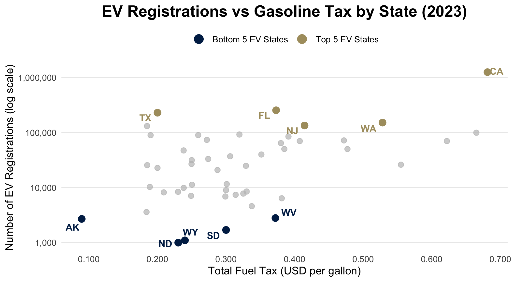
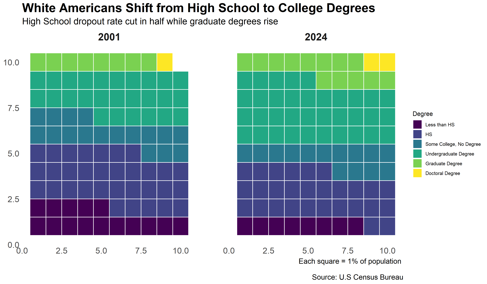

Final Presentations
EMSE 4572/6572: Exploratory Data Analysis
John Paul Helveston
December 09, 2026
Analysis of Global Insulin Supply
by Nick Pennino, Shannon Zhang,
Taegeon Bae, and Sung Jung
Following the Funding:
DEI Trends in NSF Grants, 2018–2025
by Aisha Tarar, Chenxi Zhou, and Yousra Elzamzami
Fakes on the Rise
by Eunice, Donia, Elena, and Andrea
Degrees of Inequality:
The Story of Education in America
by Leshauna Hartman and Maya Schmidt
US Vehicle Market Trends Analysis:
Exploring Mileage, Depreciation, and Market Concentration Across Powertrains
by Nithin Sarva, Jake Springer,
and Jagannath Narayanaswamy
Electric Vehicles and the
Future of Highway Funding
by Eric Lehman, Lydia Ko, Sam Evans, and Hailey Kopp
Basketball Teams with Most Loyal Fans
by Evelina Naumovich and Katya Balin
The Study of Home Advantage
in the English Premier League
by Badr Ismail, Sammy Sorayanejad,
Sergio Ley, and Tomas Haché Caro
Trustworthiness of the
New York City Subway System
by Ernest Giahyue, Lawrenz Pacayo,
Sean Smolyanskiy, and Yusuf Ozaydin
🎉 Awards Ceremony 🎉
✨ The Nominees for the Shiny Award
Shiny Nominee: Trustworthiness of the
New York City Subway System
Shiny Nominee: Electric Vehicles and the
Future of Highway Funding

(And also this chart)
Shiny Nominee: Degrees of Inequality:
The Story of Education in America

✨ The Shiny Award goes to…🥁
🎉🎉🎉
by Eric Lehman, Lydia Ko, Sam Evans, and Hailey Kopp
🗑️ The Nominees for the Janitor award are:
Electric Vehicles and the Future of Highway Funding
by Eric Lehman, Lydia Ko, Sam Evans, and Hailey Kopp
(for combining lots of different data files)
Degrees of Inequality: The Story of Education in America
by Leshauna Hartman and Maya Schmidt
(Dealt with 52 different government Excel sheet)
Trustworthiness of the New York City Subway System
by Ernest Giahyue, Lawrenz Pacayo,
Sean Smolyanskiy, and Yusuf Ozaydin
Sean Smolyanskiy, and Yusuf Ozaydin
(Lots of data in PDFs)
🗑️ The Janitor award goes to…🥁
🎉🎉🎉
Degrees of Inequality: The Story of Education in America
by Leshauna Hartman and Maya Schmidt
(Final report.qmd was over 7,000 lines!)
Fill out course evals: https://gwu.smartevals.com/
(please be specific!)